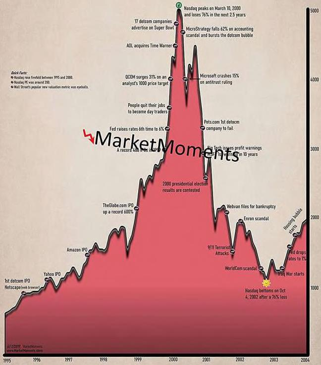

DOTCOM BUBBLE Ò Nasdaq Composite Người ta thường nói bong bóng dot-com là thời điểm lạc quan phi lý về tương lai. Nhưng một trong những tiêu đề phổ biến nhất của thời đó là công bố khối lượng giao dịch kỷ lục, đó là điều xảy ra khi các nhà đầu tư mua và bán trong một ngày. (ác nhà đầu tư - đặc biệt là những người định giá - đã không nghĩ đến 20 năm tới. Quỹ tương hỗ trung bình có doanh thu hàng năm là 120% vào năm 1999, có nghĩa là họ đang nghĩ về tám tháng tới. Các nhà đầu tư cá nhân đã bỏ tiền vào các quỹ tương hỗ đó cũng vậy. Maggie Mahar đã viết trong cuốn sách Bull! (Thị trường con bò — giá tăng): Vào giữa những năm chín mươi, báo chí đãthay thế phiếu chấm điểm hàng năm bằng các báo cáo xuất hiện ba tháng một lần. Sự thay đổi đã thúc đẩy các nhà đầu tư theo đuổi hiệu suất, đổ xô mua các quỹ đứng đầu bảng xếp hạng, ngay khi chúng đất nhất. ây là thời đại của giao dịch trong ngày, hợp đồng quyền chọn ngắn hạn và bình luận thị trường cập nhật từng phút. Nó không phải là thứ bạn ên kết với những quan điểm dài hạn. iều tương tự cũng xảy ra trong thời kỳ bong bóng nhà đất giữa những năm 2000. hật khó để biện minh cho việc trả 700.000 đô la cho một ngôi nhà hai phòng ngủ ở Florida để nuôi gia đình bạn trong 10 năm tới. Nhưng sẽ oàn toàn hợp lý nếu bạn có kế hoạch chuyển căn nhà trong vài tháng
